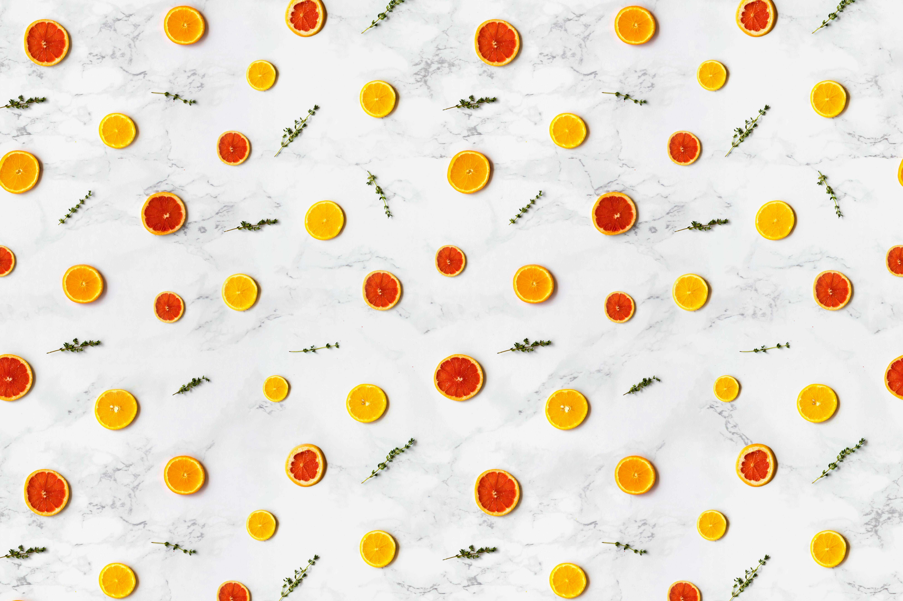

<!-- <!DOCTYPE html>
<html lang="en">
<head>
   <meta charset="UTF-8">
   <meta name="viewport" content="width=device-width, initial-scale=1.0">
   <title>Document</title>
   <style>
      * {
         margin: 0;
         padding: 0;
         box-sizing: border-box;
      }
      .slider {
         width: 100%;
         height: 500px;
         overflow: hidden;
         position: relative;
      }
      figure {
         position: relative;
         width: 400%;
         margin: 0;
         left: 0;
         animation: 20s slide infinite;
      }
      .slide {
         width: 25%;
         float: left;
      }
      .slider h1 {
         position:relative;
         
         font-size: 3rem;
         width: 100%;
         text-align: center;
         margin-top: 20px;
         
         text-shadow: 1px 1px 2px rgba(0, 0, 0, .5);
      }
      .slide img {
         width: 100%;
         height: 100%;
      }
      @keyframes slide {
         0%, 10% {
            left: 0;
         }
         20%, 30% {
            left: -100%;
         }
         40%, 50% {
            left: -200%;
         }
         60%, 70% {
            left: -300%;
         }
         80%, 100% {
            left: 0;
         }
      }
   </style>
</head>
<body>
   <div class="slider">
      <figure>
         <div class="slide">
            <h1>first img</h1>
            
         </div>
         <div class="slide">
            <h1>second img</h1>
            
         </div>
         <div class="slide">
            <h1>third img</h1>
            
         </div>
         <div class="slide">
            <h1>fourth img</h1>
            
         </div>
      </figure>
   </div>
</body>
</html> -->
<!DOCTYPE html>
<html lang="en">

<head>
   <meta charset="UTF-8">
   <meta name="viewport" content="width=device-width, initial-scale=1.0">
   <title>Document</title>
</head>
<script>
  var copy=document.querySelector('.silde').cloneNode(true);
   document.querySelector('.wrapper').appendChild(copy);

</script>
<style>
   /* Default styles for larger screens (desktop and tablets) */
   .wrapper {
      background-color: white;
      overflow: hidden;
      white-space: nowrap;
      padding: 30px 0;
      position: relative;
   }

   .silde {
      display: inline-block;
      animation: 30s sildes infinite linear;
   }

   @keyframes sildes{
      0% {
         transform: translateX(0);
      }

      100% {
         transform: translateX(-100%);
      }
   }

   .wrapper::before,
   .wrapper::after {
      position: absolute;
      top: 0;
      width: 250px;
      height: 100%;
      content: "";
      z-index: 99;
   }

   .wrapper::before {
      left: 0;
      background: linear-gradient(to left, rgba(255, 255, 255, 0), white);
   }

   .wrapper::after {
      right: 0;
      background: linear-gradient(to right, rgba(255, 255, 255, 0), white);
   }

   .wrapper:hover .silde {
      animation-play-state: paused;
   }

   .silde a {
      display: none;
   }

   .silde img:hover {
      transform: scale(1.1);
      transition: transform 0.5s;
   }

   .silde img {
      height: 250px;
      width: 200px;
      margin: 10px;
   }

   /* Mobile screen adjustments */
   @media (max-width: 768px) {
      .wrapper {
         padding: 20px 10px;
      }

      .silde img {
         height: 200px;
         width: 150px;
         margin: 5px;
      }

      .silde {
         display: inline-block;
         /* Change from inline-table to inline-block for better alignment */
      }

      /* Optional: Reduce the sliding animation speed for smaller screens */
      .silde {
         animation-duration: 20s;
      }
   }

   /* Extra Small Screens (Mobile phones in portrait mode) */
   @media (max-width: 480px) {
      .wrapper {
         padding: 10px 5px;
      }

      .silde img {
         height: 150px;
         width: 120px;
         margin: 5px;
      }

      .wrapper::before,
      .wrapper::after {
         width: 150px;
         /* Reduce the size of the fade-out effect */
      }
   }
</style>

<body>

   <div class="wrapper">
      <div class="silde">

         


         

         


         

         


         

      </div>
      <div class="silde">

         


         

         


         

         


         

      </div>

   </div>


</body>

</html>